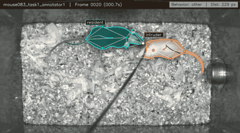

The Annolid Book#
Interactive Guide · Screenshots · Animations · Real Lab Walkthroughs
Annolid combines a desktop annotation GUI (annolid), a reproducible CLI (annolid-run), foundation-model tracking (Cutie, SAM3, DINOv3, INSID3, TAPNext, CoWTracker, YOLO), automated Track QC, behavior ethograms, spatial zones, large-TIFF / Brain 3D reconstruction, and offline 3D digital animal simulations in one unified toolkit.


See Annolid in Action#

Follow instance polygons, anatomical skeletons, and live social states across 4,881 frames of real home-cage video.

Click once with SAM AI-Polygons, scrub the behavior timeline, and inspect synchronized docks in one dark-mode Qt app.

Automatically flag occlusion gaps, compute zone occupancy and freezing bouts, and export self-contained HTML5/SVG reports.

Run 10 Two-Mouse 3D arenas, Fly-Brain LIF spiking circuits, Rat NCAP spinal locomotion, and zero-label Sim-to-Real training.
Choose Your Path#
1. First-Time User (No Training Needed)
Install Annolid, open a short video directly, outline your animals on frame 0 with AI-Polygons, and track the entire clip with Cutie or SAM3.
2. Behavior, Pose & Quantitative Analysis
Score ethograms on the timeline, draw spatial zones, interoperate with DeepLabCut/SLEAP, audit with Track QC, and export HTML5 reports.
3. Cohort Scale, Live Cameras & 3D Twins
Fine-tune YOLO11/YOLO26 on Colab, run wireless multi-camera detection, search hours of video with EmbeddingGemma 2, or bootstrap from 3D twins.
How This Book Is Organized#
Part |
What You Will Learn |
Recommended Starting Chapter |
|---|---|---|
Start Here |
What Annolid does, how the pipeline fits together, tabbed installation, lab-bench cheat sheet, and FAQ. |
|
Prepare Videos & Annotate |
Batch downsample & crop folders, label polygons/keypoints with SAM clicks or text prompts, merge shapes, and reorder lists. |
|
Tracking, Segmentation & Pose |
Real |
mouse083 Walkthrough · Body-Part Segmentation · Pose & DLC/SLEAP |
Behavior, Zones & Analysis |
Place preference, ethogram scoring, TCN behavior classifiers, freezing/optical flow, distances, EmbeddingGemma 2 frame search, Identity Governor, Track QC, IRR, and HTML5 reports. |
Track QC & Reports · TCN Classifiers · Frame Search & ID Repair |
Train Models & Scale Up |
Train YOLO11/YOLO26/YOLOE, COCO/YOLO/NDJSON data formats, Google Colab GPUs, batch downsampling, and real-time multi-camera pipelines. |
|
Microscopy & 3D Digital Twins |
View gigapixel TIFF + Illustrator atlas overlays, reconstruct Brain 3D coronal planes, and explore offline 3D animal twins & Sim-to-Real Studio. |
|
Automation, CLI & Annolid Bot |
Annolid Bot slash commands ( |
|
Resources & Community |
ModelZoo datasets, YouTube tutorials, citation BibTeX, publications using Annolid, contributing, and license. |
Tip
Quickest 60-second setup: Install the lean GUI with pip install "annolid[gui]" (or run our one-line installer), launch annolid, and open a video directly — frame extraction is optional!
Note
Book vs. Docs Portal: This book is designed for step-by-step, visual, chapter-style learning. For exhaustive CLI flags, API contracts, MCP/security references, and operational docs, visit the Annolid Docs Portal.